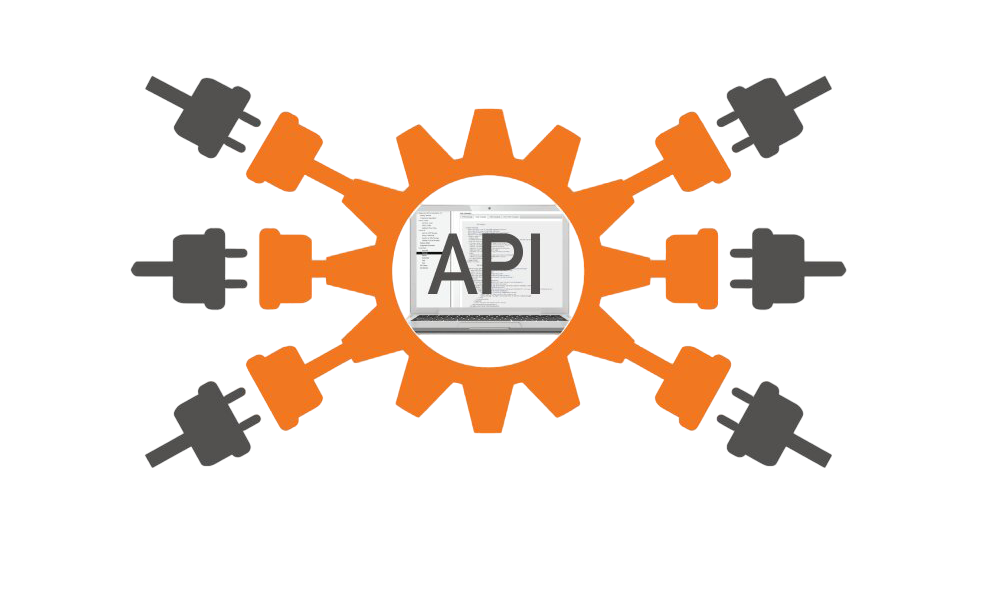
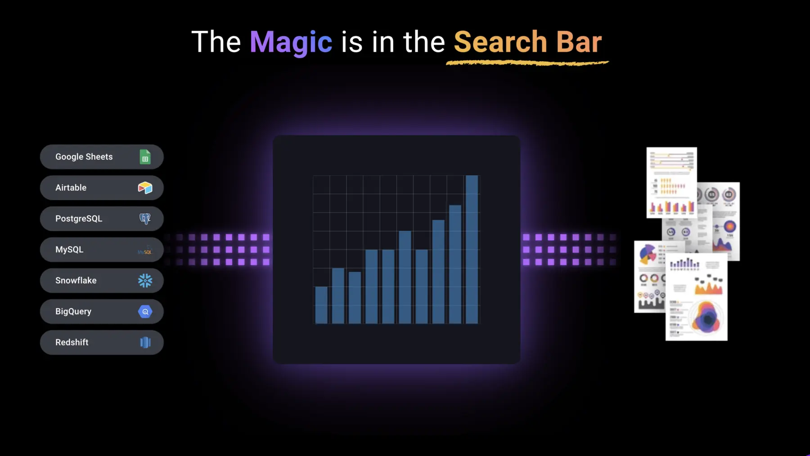
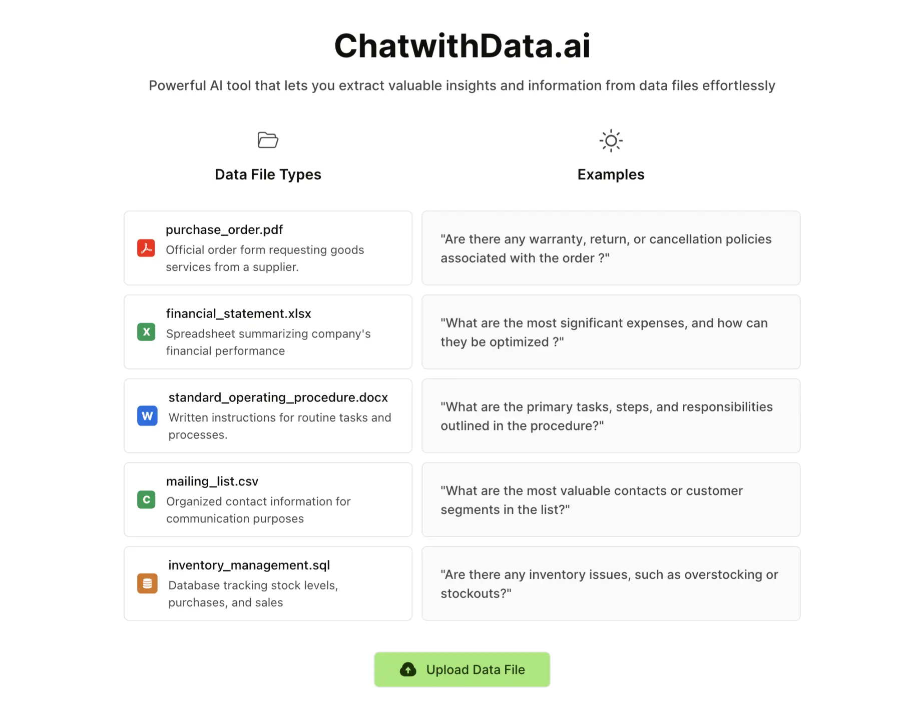
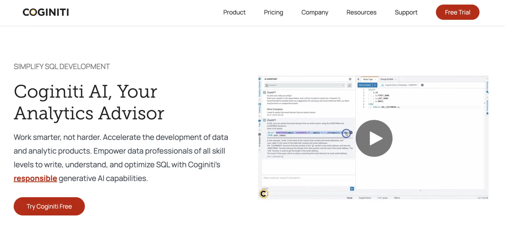
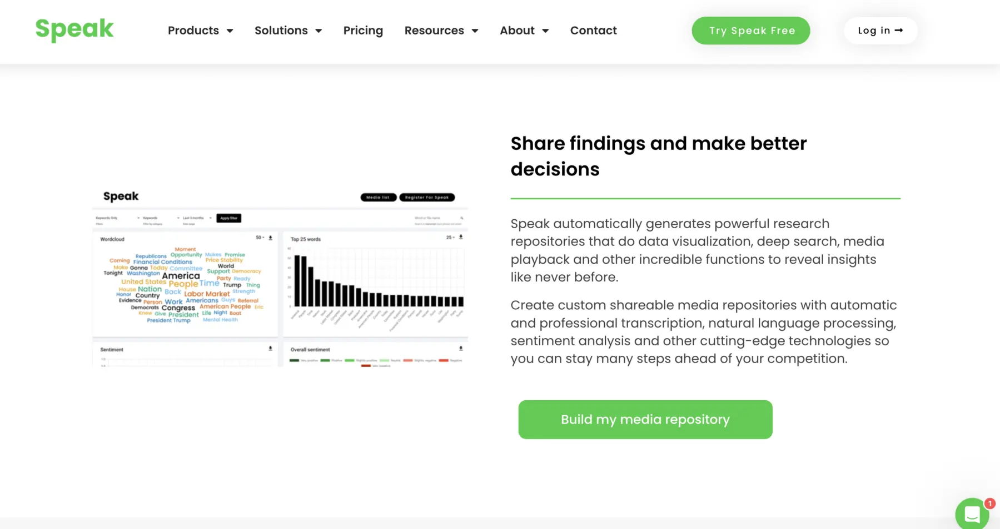

API и инструменты

API (Application Programming Interface) — это набор правил, с помощью которых разные программы общаются друг с другом. Он позволяет программам обмениваться информацией, запрашивать данные или выполнять определённые задачи.
Онлайн-инструменты:
AskEdith

Упрощает анализ данных, позволяя пользователям задавать вопросы и получать мгновенную информацию. Расширяет возможности "аналитики самообслуживания", обеспечивая безопасный и надежный доступ к данным, повышая эффективность, уменьшая зависимость и позволяя быстрее принимать решения на основе данных.
Возможности:
- Возможность задавать вопросы к данным без необходимости использования SQL (ИИ переведет ваши вопросы в SQL сам и покажет то, что вам нужно)
- Возможность анализировать большие объемы данных
- Совместим со всеми база данных и CRM (Google Sheets, Airtable, PostgreSQL, MySQL. , SQL Server, Snowflake, BigQuery и Redshift и тд)
- Возможность
Попробовать...
Chat With Data

Инструмент искусственного интеллекта, который позволяет без труда извлекать ценную информацию из файлов данных. Все, что вам нужно сделать - это загрузить данные и составить запрос к ним. Типы данных: pdf, xlsx, docx, csv, sql.
Возможности:
Примеры вопросов к данных:
- Какие расходы являются наиболее значительными и как их можно оптимизировать?
- Каковы основные задачи, шаги и обязанности, изложенные в договоре?
- Какие контакты или сегменты клиентов в списке наиболее ценны?
- Найди нужные контакты из списка рассылки
Попробовать...
Coginiti

Позволяет пользователям генерировать SQL запросы, используя подсказки на естественном языке, оптимизировать существующие SQL-запросы, объяснять общий SQL в интегрированном каталоге, давать подробные объяснения и решения ошибок, а также объяснять планы выполнения запросов для лучшей оптимизации. ИИ помощник постоянно развивается на основе каждого взаимодействия, адаптируя рекомендации и предложения в соответствии с индивидуальными потребностями.
Возможности:
- Мгновенная помощь в составлении запроса
- Помощь в объяснении запроса
- Повышение производительности запросов (и снижение затрат на вычисления)
- Доступ ко всем своим хранилищам данных (Redshift, Microsoft, Snowflake, IBM, bigquery, Yellowbrick и Databricks и. тд)
- Персональный репозиторий для SQL-запросов
Попробовать...
Speak Ai

Платформа для анализа и исследования языковых данных, которая предлагает возможности транскрипции, анализа данных и анализа настроений для различных типов медиа. Он позволяет выполнять автоматическую транскрипцию, массовый анализ, визуализацию и сбор данных для использования в исследованиях, анализе рынка и конкурентном анализе. Инструмент также предлагает общий медиа-репозиторий, систему текстовых подсказок на базе искусственного интеллекта и решение для SWOT-анализа, а также другие функции.
Возможности:
- Помощник по онлайн-встречам автоматически присоединяется к вашим собраниям, записывает, расшифровывает и анализирует их
- Также можно загрузить свои аудио, видео и текст
- Возможность задать вопросы об языковых данных и получить ответы с помощью Speak Magic Prompts
- Возможность получить визуализированные данные
Попробовать...
Туториалы по использованию API:
О НАС:
☎ 8(800)555-35-35
✉ neyroseti@gmail.com
Адрес: Загородное шоссе, д. 2
Автор: Хрущов Лев Фёдорович